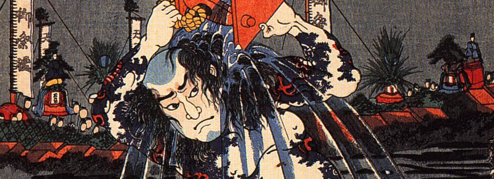
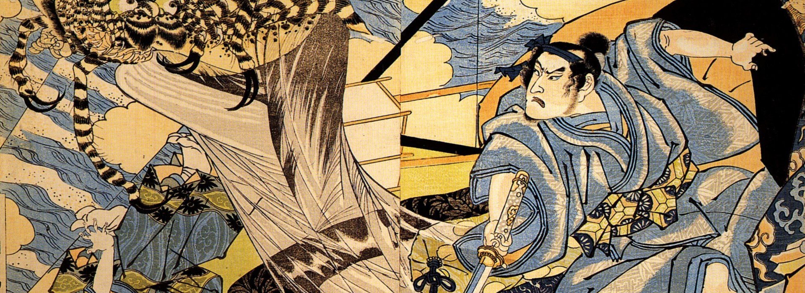
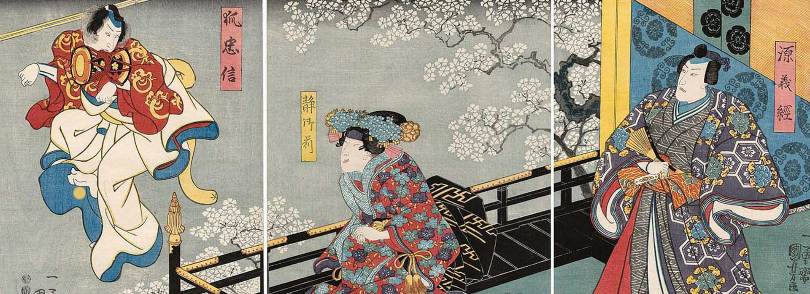
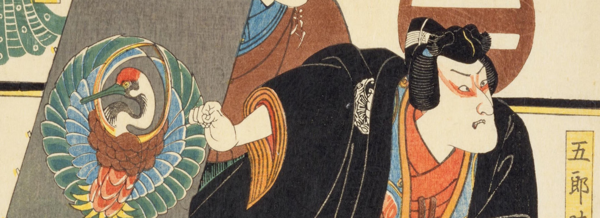
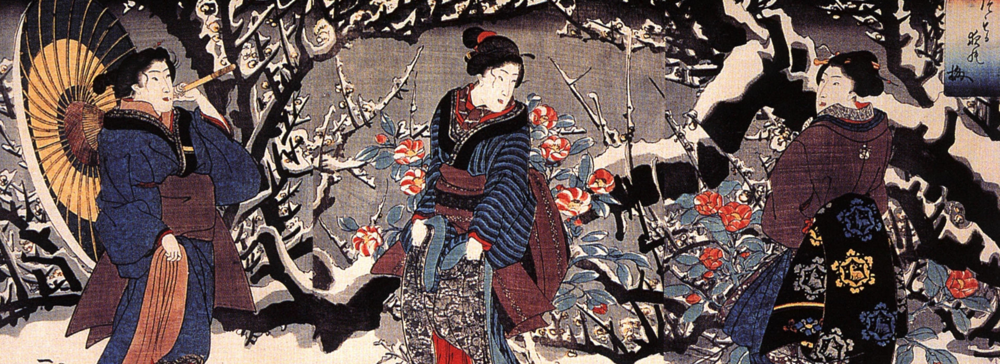

Η κίνηση των παιδιών με συστηματικό τρόπο κατά την προσχολική ηλικία έχει ερευνηθεί τα τελευταία χρόνια και έχει συνδεθεί με την επίδοσή τους στο σχολείο. Η συνεχής κίνηση ενισχύει την εγκεφαλική λειτουργία αυξάνοντας την αιμάτωση του εγκεφάλου, διευρύνοντας τους νευρώνες, βελτιώνει τη μνήμη, τη συγκέντρωση, τη λήψη αποφάσεων, τη συνεργασία και τη συμπεριφορά μέσα στην τάξη. Η φυσική δραστηριότητα στα παιδιά ενισχύει τη γνωστική και συναισθηματική εξέλιξή τους. Για παράδειγμα, μέσα από τη γυμναστική που γίνεται υπό μορφή παιχνιδιού, τα παιδιά μαθαίνουν να ακολουθούν κανόνες για να διεξαχθεί το παιχνίδι, να συνεργάζονται στο παιχνίδι και να γυμνάζονται δίχως να το καταλαβαίνουν.
Παρά τα οφέλη της άσκησης, παρατηρείται παιδική παχυσαρκία, λιγότερος ύπνος, απομάκρυνση από τον αθλητισμό και κακές επιλογές διατροφής. Αυτά έχουν ως συνέπεια το 38% των παιδιών ως 14 ετών να είναι παχύσαρκα στην Ελλάδα και 43% από 5-7 ετών. Άλλη συνέπεια είναι η μειωμένη σωματική και νοητική υγεία των παιδιών. Ένα παιδί με παραπανίσια κιλά γίνεται στόχος χλευασμού στο σχολείο, δυσκολεύεται να κάνει παρέες, μειώνεται η αυτοπεποίθηση και η αυτοεκτίμησή του, με αποτέλεσμα να συμμετέχει λιγότερο σε αθλητικές, κοινωνικές και ψυχαγωγικές δραστηριότητες εντός και εκτός σχολείου. Ο αθλητισμός διορθώνει όλα τα αναφερθέντα προβλήματα, εφ όσον το παιδί περνάει καλά στην προπόνηση και αποκτά δεξιότητες, κάνει φιλίες και βάζει στόχους. Ένα παιδί που είναι καλό σε ένα άθλημα γίνεται αποδεκτό στην τάξη του και δημοφιλές. Ένα παιδί δίχως τέτοιες δεξιότητες είναι θέμα χρόνου να βιώσει απογοήτευση.
Όταν το παιδί μένει σε ένα μικρό δωμάτιο και δεν παίζει ενώ η ενέργεια της ηλικίας του το ωθεί για το αντίθετο, τότε καταπιέζεται, περιορίζεται η κινητικότητά του. Δεν φταίει μόνο ο εκάστοτε δήμος που δεν διαθέτει χώρους άθλησης για παιδιά, αλλά και οι γονείς που δεν επιλέγουν τον αθλητισμό για τα παιδιά τους ή τα ωθούν σε κλειστές μη κινητικές δραστηριότητες θέτοντάς τες ως προτεραιότητα. Άλλες φορές πάλι, γίνονται υπερπροστατευτικοί φοβούμενοι ότι το παιδί θα χτυπήσει. Μα πρέπει, αυτό είναι το φυσιολογικό για την ηλικία του, να πέσει, να λερωθεί, να αλληλεπιδράσει με άλλα παιδιά και άγνωστα αντικείμενα. Ακόμα και στο σχολείο, η φυσική αγωγή έχει περιοριστεί σε όλες τις τάξεις και βαθμίδες εκπαίδευσης. Τέλος, αναφέρω την τεχνολογία, η οποία γοητεύει τα παιδιά και τα απομακρύνει από τη φύση τους, την κίνηση. Το παιδί παραμένει ήσυχο, αλλά όχι υγιές.
Το παιδί που αθλείται από προσχολική ηλικία θα μάθει να χειρίζεται άγνωστα αντικείμενα (στόχους, μπάλες), να κινείται γύρω από αυτά (στεφάνια, κρίκοι, κώνοι), να πέφτει σε αυτά (στρώματα, τατάμι), να ακολουθεί κανόνες, δομή, να μαθαίνει το σώμα του (διατάσεις, γυμναστική με το βάρος του σώματος), να εκτελεί βασικές κινητικές δεξιότητες (gallop, skip, leap, κουτσό, πλάγια βήματα, πίσω βήματα), να δέχεται οδηγίες, να συνεργάζεται με τα υπόλοιπα παιδιά και συνεχώς θα μαθαίνει άγνωστα πράγματα. Όλα αυτά αναπτύσσουν το νευρικό σύστημα, το μυοσκελετικό σύστημα και καθιστούν το παιδί ικανό να ανταποκριθεί σε προκλήσεις, γιατί έχει συνηθίσει να εκτελεί νέες ασκήσεις και να μαθαίνει τεχνικές. Θα καταλάβει από μόνο του ποιες ασκήσεις δεν εκτελεί σωστά και θα τις δουλέψει στο σπίτι ή στο σχολείο. Αποκτά υπευθυνότητα δίχως να το πιέσει κανένας. Το παιδί γίνεται κινητικά «εγγράμματο» και αναλαμβάνει την προσωπική ευθύνη να βελτιωθεί γιατί το θέλει. Όλα αυτά απαιτούν έναν προπονητή παιδαγωγό, ο οποίος θα ασχοληθεί με το κάθε παιδί και όχι μόνο θα περάσει αυτά τα μηνύματα, αλλά θα εμπνεύσει το παιδί να δει πως η προπόνηση είναι ένα σοβαρό τμήμα της καθημερινότητας και όχι μια αγγαρεία.
Σε σύνθετα αθλήματα, κατά τα οποία τα παιδιά πρέπει να εκτελέσουν μια σειρά από ασκήσεις όπως ένα πρόγραμμα (ενόργανη, ρυθμική) ή μια φόρμα (πολεμικές τέχνες), το παιδί αναπτύσσει συγκέντρωση για μεγάλο χρονικό διάστημα και κινητική μνήμη. Δίχως αυτά τα δύο δεν μπορεί να συμμετέχει, έτσι αναγκάζεται να προσέχει και να θυμάται τις κινήσεις, τη σειρά και να εκτελεί. Ένα παιδί που εκτελεί μια τέτοια σειρά νιώθει μεγάλη ικανοποίηση και εκτιμά τον εαυτό του. Για παράδειγμα, στις πολεμικές τέχνες η διαδικασία των εξετάσεων είναι αρκετά σοβαρή. Όταν το παιδί ανταποκρίνεται με όλα τα βλέμματα επάνω του και κρίνεται, μαθαίνει πως η δουλειά, η συνέπεια, η υπευθυνότητα και η διαχείριση του άγχους, επιβραβεύονται. Το σημαντικότερο είναι πως ένα παιδί που περνά από εξετάσεις θεωρεί πως όλα αυτά είναι φυσιολογικά για την επιτυχία, διδάσκεται λοιπόν τον τρόπο με τον οποίο λειτουργεί ή θα έπρεπε να λειτουργεί η κοινωνία, θέτει στόχους και αναλαμβάνει την ευθύνη της επιτυχίας ή της αποτυχίας.
Η δουλειά που κάνει ένας προπονητής στα παιδιά δεν πρέπει να ακυρώνεται από τους γονείς. Όταν ένα παιδί εξασκείται, ο γονέας δεν πρέπει να το αποθαρρύνει, αλλά να το παρατηρεί και να το επιβραβεύει θετικά. Όταν ένα παιδί προσπαθεί κάποια καινούρια κινητική δεξιότητα, τα «μην», «κατέβα από εκεί», «κάτσε ήσυχος» κτλ. δεν έχουν καμμία θέση πλην της περιπτώσεως κινδύνου για το παιδί. Το παιδί που ενδιαφέρεται να βελτιωθεί θα βρει ευκαιρίες να ασκηθεί εντός και εκτός σπιτιού.
Η οικογένεια είναι η στήριξη του παιδιού στην ανάπτυξή του και ο γονέας οφείλει να ρωτά τον προπονητή αν έχει απορίες και όχι να νομίζει ότι ξέρει καλύτερα.
Στο τμήμα Σούμο εγώ διδάσκω κινητική μάθηση στα μικρά παιδιά, δηλαδή πως αλλάζουμε τον τρόπο κίνησης, ώστε η κίνηση να εκτελείται σωστά, με τη σωστή τεχνική. Το παιδί μαθαίνει να εκτελεί βασικές κινήσεις του σώματος και σταδιακά να τις τελειοποιεί. Αυτές οι κινήσεις εμφανίζονται σε όλα τα αθλήματα και είναι απαραίτητες για τα παιδιά. Το παιδί μαθαίνει να συντονίζει το σώμα του και να το πηγαίνει όπου θέλει με τον τρόπο που θέλει, να ισορροπεί, να σταματά, να αντιλαμβάνεται το χώρο και τα εμπόδια. Ως την ηλικία των 12 ετών το αργότερο θα πρέπει να τις έχουν τελειοποιήσει όλα τα παιδιά. Η κινητική ανάπτυξη των παιδιών επηρεάζεται από την ποιότητα και την ποσότητα της προπόνησης, από το χρόνο της προπόνησης και της άσκησης του παιδιού, από τον εξοπλισμό που χρησιμοποιείται και κατά πόσο το παιδί ενθαρρύνεται. Η κινητική μάθηση και ο κινητικός έλεγχος φέρουν αλλαγές στην κίνηση του παιδιού, οι οποίες είναι μόνιμες στην εκτέλεση επιδέξιας συμπεριφοράς.
Προσοχή σε κάτι. Η κινητική ανάπτυξη σχετίζεται με την ηλικία. Αυτό δεν σημαίνει πως όσο μεγαλώνει ένα παιδί μεγαλώνει και η κινητική του ανάπτυξη. Όχι, η κινητική ανάπτυξη αναπτύσσεται μέσω της άθλησης και της κινητικής μάθησης, η ηλικία βοηθά. Οι δεξιότητες αυτές δεν μαθαίνονται θεωρητικά, αλλά πρακτικά, μέσω της εξάσκησης. Ο προπονητής βοηθά, βελτιώνει, κάνει παρατηρήσεις και ενθαρρύνει.
Πλην των αναφερομένων δεξιοτήτων στις κουκκίδες που διαβάσατε, στο τμήμα μας εκτελούνται σχεδόν όλες οι ασκήσεις της κινητικής ανάπτυξης των παιδιών για την αδρή κινητικότητα, κατά τη διάρκεια της προπόνησης, όπως συμβαίνει σε πολλές πολεμικές τέχνες (άλματα, κουτσό, leaping, κυβίστηση, βήματα πίσω, πλάγια, αλλαγή κατεύθυνσης, γέφυρα κτλ.)
Με την εκτέλεση των παραπάνω ασκήσεων μειώνεται ο χρόνος εκτέλεσης, δηλαδή ανταποκρίνεται το παιδί γρηγορότερα όταν περάσει το ερέθισμα στο χρόνο αντίδρασης.
Η κινητική ανάπτυξη επηρεάζεται από:
Η κινητική μάθηση και ο κινητικός έλεγχος φέρουν μόνιμες αλλαγές στην εκτέλεση επιδέξιας συμπεριφοράς.
Στο Σούμο το παιδί:
Η κινητική ανάπτυξη των παιδιών δεν είναι απλώς η εκτέλεση ασκήσεων. Είναι η βάση για τη σωστή λειτουργία του σώματος και του μυαλού, η καλλιέργεια υπευθυνότητας, αυτοπεποίθησης και συνεργασίας, και η εκμάθηση να αντιμετωπίζουν προκλήσεις με θάρρος και ψυχραιμία. Μέσα από αθλήματα όπως το Σούμο, τα παιδιά μαθαίνουν να κινούνται με ασφάλεια, να συντονίζουν το σώμα τους, να αλληλεπιδρούν και να διασκεδάζουν, ενώ ταυτόχρονα αναπτύσσουν δεξιότητες που θα τους συνοδεύουν σε όλη τους τη ζωή. Η στήριξη των γονέων και η καθοδήγηση ενός προπονητή παιδαγωγού είναι καθοριστικής σημασίας, καθώς επιτρέπει στα παιδιά να μεγαλώνουν κινητικά «εγγράμματα», υγιή και γεμάτα αυτοπεποίθηση. Κάθε παιδί αξίζει να έχει την ευκαιρία να ανακαλύψει τη χαρά της κίνησης και να αναπτύξει το δυναμικό του μέσα από τη σωστή εκπαίδευση και τη διασκέδαση του αθλητισμού.